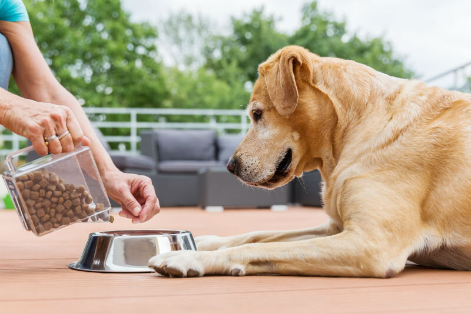

Pet Nutrition
Good nutrition is important for pets to maintain good health and support their overall well-being.
Pets require a balanced diet that includes adequate amounts of protein, carbohydrates, fat, and essential vitamins and minerals. pets will have different nutritional needs depending on their size, age, activity level, and overall health, therefore what is right for one pet, may not be the best for another.